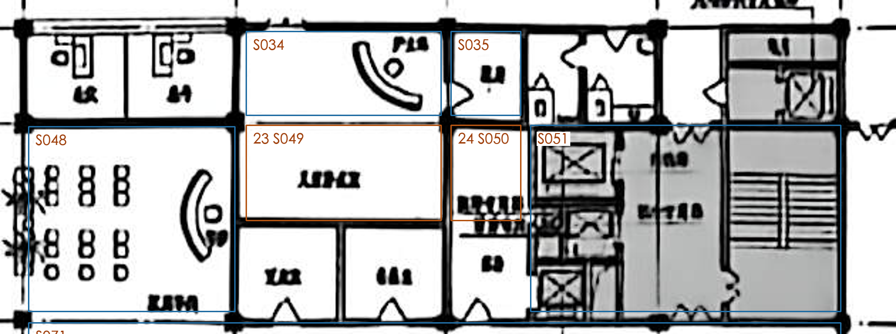

问题：儿童输液室S049、电梯前室S050如何接入公共通道？请指出S049直接相连的是候诊区S048、前室S050还是其他空间；S050与护士站S034／配药S035／交通核S051的实际衔接也可一并说明。
我的判断：S049/S050周边墙线较密，当前原图像素不能可靠区分其唯一出口，不能仅从共墙补access。S035与S034之间的门、S051南侧通S071的门已独立记录；缺少的只是这组区域的关键对外解释。
我的确认／备注：待填写（写直接相连的S编号或名称即可，无需给门宽或精确门位）。